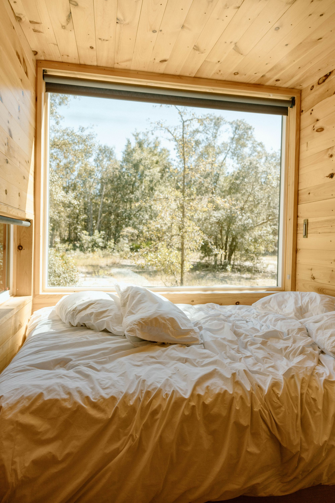
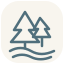
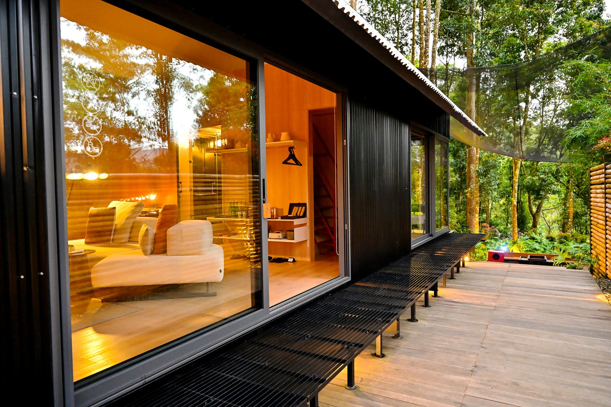
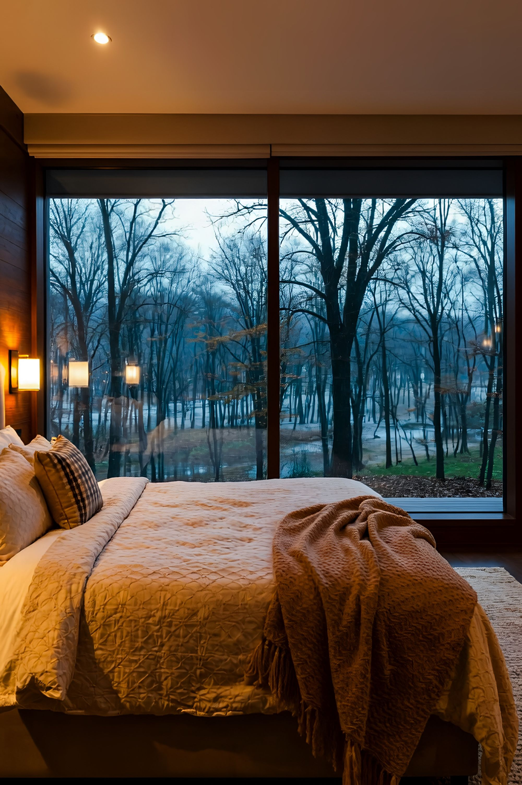

Для двоих↗Сосна
7 900 ₽ / ночь32 м² · до 2 гостей · терраса

Лесной берегзагородный отельДомики у воды · отдых в своём ритме
Просыпаться с видом на лес.
Слушать воду. Быть рядом.
 Между лесом и водой
Между лесом и водойВаши выходные здесь
Здесь можно забыть, какой сегодня день. Завтракать на террасе, уходить по лесной тропинке и возвращаться к тёплому свету своего дома.
Мы придумали «Лесной берег» для этих простых моментов. Для поездки вдвоём, семейных каникул и встреч, которые давно откладывали.
Познакомиться с местом ↗Пожить ближе к природе

Для двоих↗32 м² · до 2 гостей · терраса

У воды↗54 м² · до 4 гостей · терраса

Для всей семьи↗78 м² · до 6 гостей · терраса

Никакого расписания
Прогулка по воде, горячая сауна или книга, до которой всё не доходили руки.
Найти своё занятие ↗Маленькие радости
С мягкого света в окне и запаха кофе. В каждом домике есть кухня, удобная кровать и место, где хочется задержаться.
Заглянуть внутрь ↗Перед поездкой
В демонстрационном каталоге для отдыха с питомцем подходят «Берег» и «Кедр». Найти их можно фильтром «С питомцем».
Проживание, постельное бельё, полотенца, уборка перед заездом и пользование кухней. Завтрак и прокат лодки можно добавить при расчёте.
Заезд с 15:00, выезд до 12:00. Калькулятор считает стоимость по количеству ночей.
Это проект для портфолио. Вы можете пройти весь сценарий выбора и расчёта, но реальная бронь не создаётся и деньги не списываются.